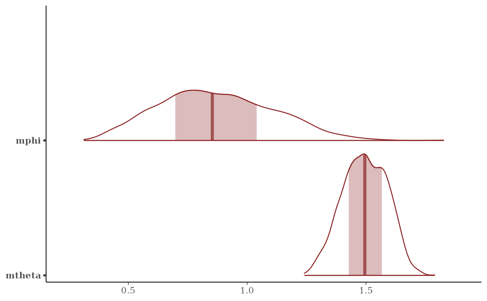

The Tweedie distribution with power mtheta between 1 and 2, the
compound Poisson-gamma. It models non-negative continuous data with
a point mass at zero, such as catch per unit effort, rainfall or
biomass. A Poisson number of events each contributes a Gamma amount.
The variance is mphi * mu^mtheta.
Arguments
- M
Positive integer number of series terms in the Stan log density. Defaults to
30L. The cost grows linearly inM. Too small a value biases the likelihood down and the posteriors ofmphiandmthetawith it.
Value
A brms::customfamily object for mvgam(family = ).
Details
The family has three distributional parameters:
muThe mean, on a fixed log link. The compound construction needs
mu > 0, which an identity link driven by a latent trend cannot guarantee.mphiThe dispersion, on a log link.
mthetaThe power, bounded to
[1.001, 1.999]. Near 1 the Poisson ratemu^(2 - mtheta) / ((2 - mtheta) mphi)and near 2 the Gamma shape(2 - mtheta) / (mtheta - 1)leave floating-point range.
The latent trend enters through mu. mphi and mtheta are
scalars by default. A formula such as bf(y ~ x, mphi ~ site) gives
the dispersion its own linear predictor on the log scale, whose
intercept takes a student_t(3, 0, 2.5) prior. mtheta takes no
formula.
mu, mphi and mtheta trade off along Var[Y] = mphi * mu^mtheta.
Data that weakly separate Poisson-like from Gamma-like tails leave a
ridge in their joint posterior. An informative prior such as
prior(normal(1.5, 0.3), class = mtheta) resolves it.
The Stan log density sums M terms of the compound series for each
non-zero observation (Dunn and Smyth 2005). The terms past M are
negligible when M is well above the Poisson rate lambda, which
grows as mtheta approaches 2 or mphi approaches 0. Raise M when
check_tweedie_truncation() reports a rate near it. log_lik() and
posterior_predict() use mgcv::ldTweedie() and mgcv::rTweedie().
The Stan code adapts the custom_family of the Australian Institute
of Marine Science (2023), which uses the decomposition of Spinkney
(2020).
References
Australian Institute of Marine Science (2023). open-AIMS/tweedie: a
brms custom_family implementation of the Tweedie compound
Poisson-gamma distribution. GitHub,
https://github.com/open-AIMS/tweedie. MIT licence.
Spinkney (2020). Tweedie likelihood (compound Poisson-gamma) in Stan. Stan Discourse, https://discourse.mc-stan.org/t/tweedie-likelihood-compound-poisson-gamma-in-stan/14636
Dunn, P. K., & Smyth, G. K. (2005). Series evaluation of Tweedie exponential dispersion model densities. Statistics and Computing, 15(4), 267-280. doi:10.1007/s11222-005-4070-y
Jorgensen, B. (1987). Exponential dispersion models. Journal of the Royal Statistical Society: Series B, 49(2), 127-162. doi:10.1111/j.2517-6161.1987.tb01685.x
See also
Other observation families:
beta_nb(),
categ(),
com_binomial(),
diri(),
multi(),
mvgam_families,
mvn(),
mvt(),
nmix(),
occ()
Examples
# \dontrun{
set.seed(3)
simdat <- sim_mvgam(family = tweedie(), n_series = 1L,
n_timepoints = 120L, trend_model = AR())
mod <- mvgam(
y ~ s(x),
trend_formula = ~ AR(p = 1),
data = simdat$data_train,
family = tweedie(),
chains = 2,
silent = 2
)
#> Warning: 51 of 2000 (3.0%) transitions ended with a divergence.
#> See https://mc-stan.org/misc/warnings for details.
# The dispersion and power
mcmc_plot(mod, variable = c("mphi", "mtheta"), type = "areas")

# The share of zeros the model predicts against the share observed
prop_zero <- function(y) mean(y == 0)
pp_check(mod, type = "stat", stat = "prop_zero", binwidth = 0.02)
#> Error in get(as.character(FUN), mode = "function", envir = envir): object 'prop_zero' of mode 'function' was not found
# Next: check_tweedie_truncation(mod) checks the series length M
# }